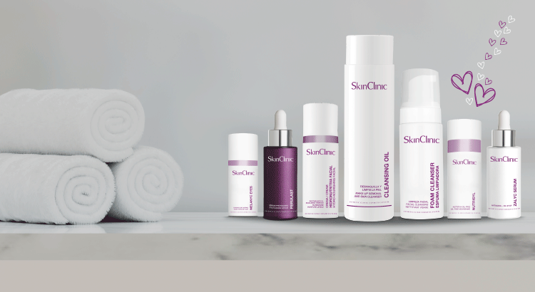
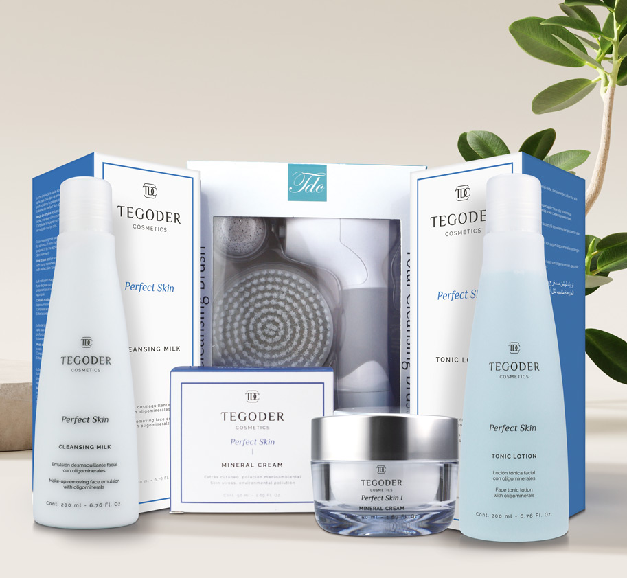
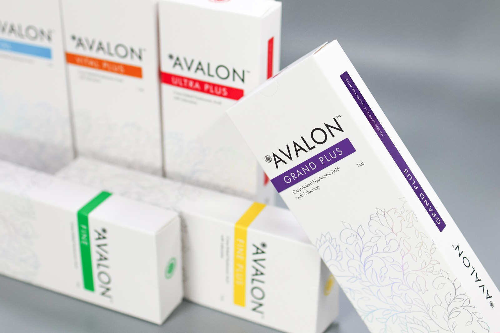

SkinClinic es una empresa de dermocosmética que ofrece productos profesionales para el cuidado de la piel. Su catálogo incluye tratamientos faciales, corporales y capilares, con fórmulas diseñadas para combatir manchas, arrugas y otros signos de envejecimiento, combinando innovación científica con ingredientes de calidad.
Descargar Catálogo
Tegoder Cosmetics es una marca de alta cosmética que combina ciencia y naturaleza para el cuidado de la piel. Forma parte del Grupo Tegor y lleva casi dos décadas desarrollando tratamientos faciales y corporales con principios activos innovadores y de última generación. Sus productos se utilizan tanto en centros de estética como en el cuidado personal en casa, destacando por su calidad, innovación
Descargar Catálogo
Koru Pharma es una compañía internacional especializada en biotecnología avanzada aplicada a la estética y la medicina antienvejecimiento. Su enfoque está en desarrollar soluciones innovadoras para la regeneración y el rejuvenecimiento de la piel, con productos de uso profesional en clínicas y centros de estética.
Descargar Catálogo